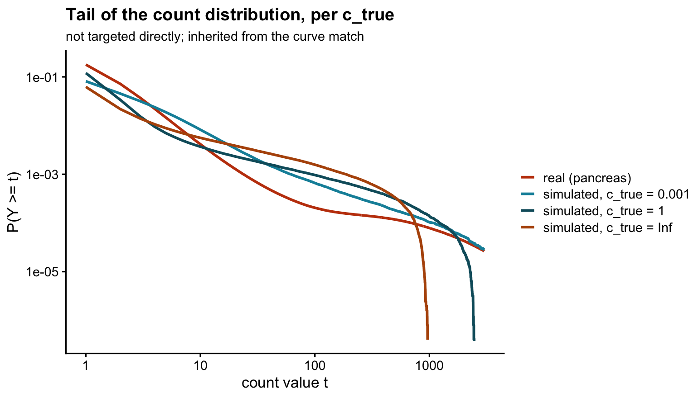
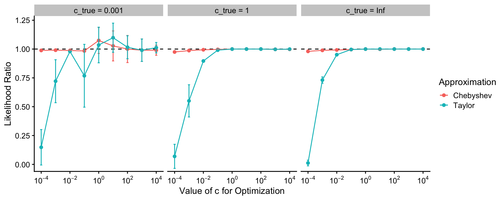
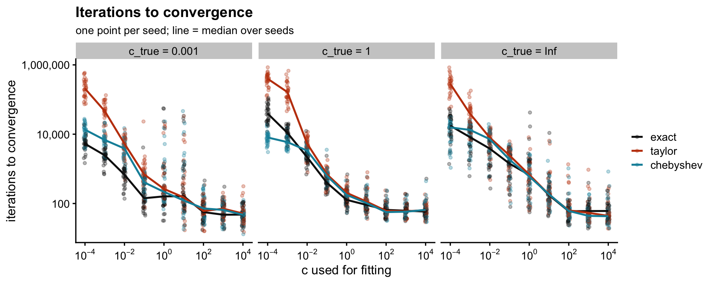
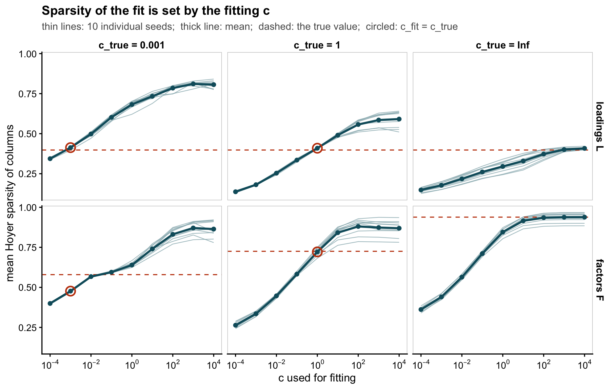
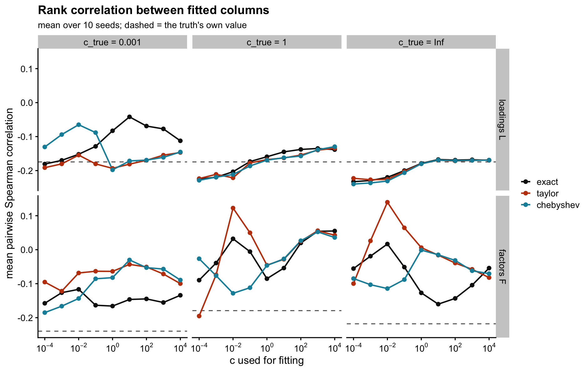
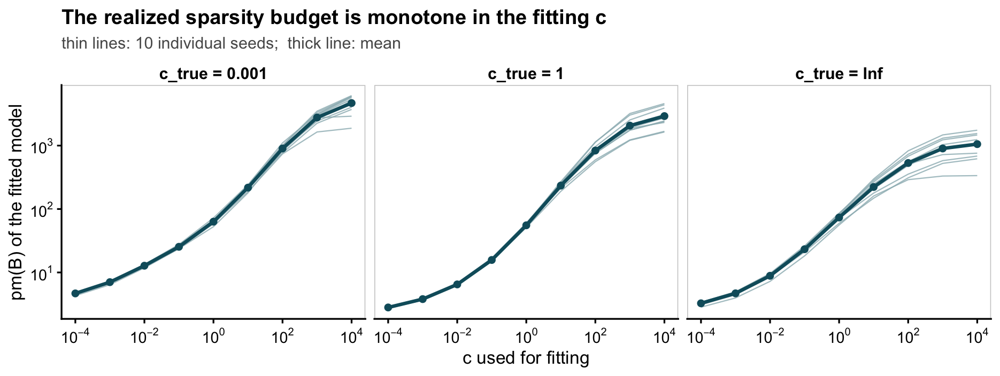
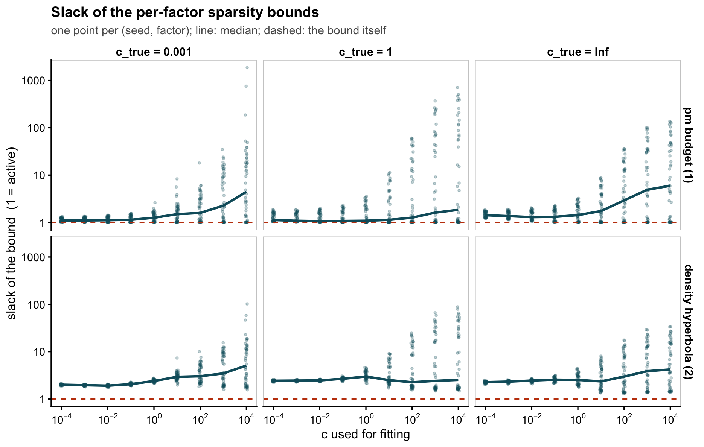
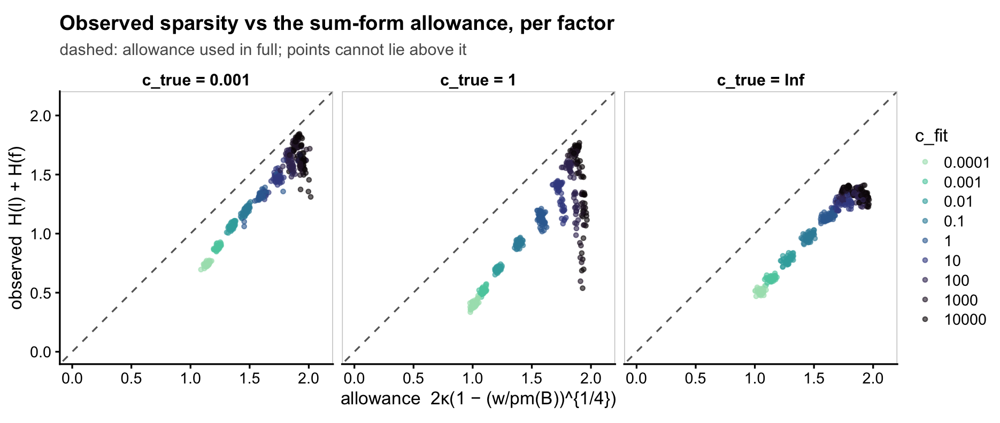

Last updated: 2026-08-10
Checks: 6 1
Knit directory: log1p_experiments/
This reproducible R Markdown analysis was created with workflowr (version 1.7.2). The Checks tab describes the reproducibility checks that were applied when the results were created. The Past versions tab lists the development history.
Great! Since the R Markdown file has been committed to the Git repository, you know the exact version of the code that produced these results.
Great job! The global environment was empty. Objects defined in the global environment can affect the analysis in your R Markdown file in unknown ways. For reproduciblity it’s best to always run the code in an empty environment.
The command set.seed(20240402) was run prior to running
the code in the R Markdown file. Setting a seed ensures that any results
that rely on randomness, e.g. subsampling or permutations, are
reproducible.
Great job! Recording the operating system, R version, and package versions is critical for reproducibility.
To ensure reproducibility of the results, delete the cache directory
sim_design_cache and re-run the analysis. To have workflowr
automatically delete the cache directory prior to building the file, set
delete_cache = TRUE when running wflow_build()
or wflow_publish().
Great job! Using relative paths to the files within your workflowr project makes it easier to run your code on other machines.
Great! You are using Git for version control. Tracking code development and connecting the code version to the results is critical for reproducibility.
The results in this page were generated with repository version 2fcdd05. See the Past versions tab to see a history of the changes made to the R Markdown and HTML files.
Note that you need to be careful to ensure that all relevant files for
the analysis have been committed to Git prior to generating the results
(you can use wflow_publish or
wflow_git_commit). workflowr only checks the R Markdown
file, but you know if there are other scripts or data files that it
depends on. Below is the status of the Git repository when the results
were generated:
Ignored files:
Ignored: .DS_Store
Ignored: analysis/c_grid_sim_cache/
Ignored: analysis/hoyer_sparsity_c_cache/
Ignored: analysis/log1p_identifiability_cache/
Ignored: analysis/sim_design_cache/
Note that any generated files, e.g. HTML, png, CSS, etc., are not included in this status report because it is ok for generated content to have uncommitted changes.
These are the previous versions of the repository in which changes were
made to the R Markdown (analysis/sim_design.Rmd) and HTML
(docs/sim_design.html) files. If you’ve configured a remote
Git repository (see ?wflow_git_remote), click on the
hyperlinks in the table below to view the files as they were in that
past version.
| File | Version | Author | Date | Message |
|---|---|---|---|---|
| Rmd | 2fcdd05 | Eric Weine | 2026-08-10 | sim_design: add sparsity-bounds section (budget, per-factor slack, |
| html | c998038 | Eric Weine | 2026-08-10 | Build site. |
| Rmd | d946579 | Eric Weine | 2026-08-10 | approx-ratio figure: 95% CI error bars instead of +/- 1 SE |
| html | c115923 | Eric Weine | 2026-08-10 | Build site. |
| Rmd | 950e6f7 | Eric Weine | 2026-08-10 | sim_design results: likelihood-ratio figure matching the paper, |
| html | 61e6cb9 | Eric Weine | 2026-08-10 | Build site. |
| Rmd | 893f7e7 | Eric Weine | 2026-08-10 | sim_design: add results (approximation accuracy, sparsity, rank |
| html | d6bef6a | Eric Weine | 2026-08-09 | Build site. |
| Rmd | 7da3248 | Eric Weine | 2026-08-09 | sim_design: sweep the generating c over 1e-3, 1, Inf |
| html | 61755b6 | Eric Weine | 2026-08-08 | Build site. |
| Rmd | 7617718 | Eric Weine | 2026-08-08 | sim_design: paper-ready description of the approx-sim generator |
| html | 7dd4a0e | Eric Weine | 2026-08-08 | Build site. |
| Rmd | 7502925 | Eric Weine | 2026-08-08 | sim_design: profile the mean out of the pancreas calibration |
| html | db3a6f5 | Eric Weine | 2026-08-08 | Build site. |
| Rmd | 44543b7 | Eric Weine | 2026-08-08 | sim_design: add pancreas calibration as the primary anchor |
| html | 4e5c491 | Eric Weine | 2026-08-08 | Build site. |
| Rmd | b6e92a1 | Eric Weine | 2026-08-08 | Add sim_design: budget-curve-calibrated simulation matched to MOCA |
This page describes exactly the simulation that the
exact-vs-approx / sparsity experiment will run. To make drift
impossible, every constant below is read from the experiment’s own
configuration file
(inst/paper_figures/experiments/approx_sim_common.R in the
log1pNMF repo), which is what the cluster workers source — including the
calibrated knobs, which that file in turn reads from
approx_sim_calibration.rds with a consistency check. An
earlier version of this page developed the method with a MOCA anchor and
a single \(c_{\textrm{true}}\); that
material is in the git history.
library(ggplot2); library(cowplot)
theme_set(theme_cowplot(font_size = 11))
exp_dir <- path.expand("~/Documents/log1pNMF/inst/paper_figures/experiments")
source(file.path(exp_dir, "approx_sim_common.R"), chdir = TRUE)
knitr::kable(data.frame(
parameter = c("n (samples)", "p (features)", "K (rank, true = fitted)",
"Dirichlet concentration a", "t degrees of freedom",
"rate-scale magnitude floor", "c_true grid"),
value = c(N_ROWS, N_COLS, K_TRUE, A_SIG, T_DF, CAL$rate_floor,
paste(sapply(C_TRUE_GRID, fmtc), collapse = ", ")),
role = "fixed by design"),
caption = "The design constants, read from approx_sim_common.R.")| parameter | value | role |
|---|---|---|
| n (samples) | 500 | fixed by design |
| p (features) | 500 | fixed by design |
| K (rank, true = fitted) | 5 | fixed by design |
| Dirichlet concentration a | 0.3 | fixed by design |
| t degrees of freedom | 4 | fixed by design |
| rate-scale magnitude floor | 0.05 | fixed by design |
| c_true grid | 0.001, 1, Inf | fixed by design |
kb <- KNOBS
kb$c_true <- sapply(kb$c_true, fmtc)
knitr::kable(kb, digits = 4,
caption = "The calibrated knobs, one row per c_true. pi0, sigma and cap are
searched; mu is profiled (solved so the expected mean count equals the real
0.674); floor is the fixed rate-scale floor mapped through each link.")| c_true | pi0 | mu | sigma | cap | floor |
|---|---|---|---|---|---|
| 0.001 | 0.9592 | 2.1956 | 0.0994 | 15.5685 | 3.9318 |
| 1 | 0.8379 | -0.9633 | 0.6652 | 7.8197 | 0.0488 |
| Inf | 0.9011 | -2.4179 | 1.4668 | 911.2182 | 0.0500 |
Counts were simulated from the log1p NMF model itself at each of three link constants \(c_{\textrm{true}} \in \{10^{-3}, 1, \infty\}\), with parameters calibrated so that all three regimes reproduce the count characteristics of the pancreas dataset. For each of ten seeds we drew an \(n \times K\) loading matrix \(L\) with rows \(\mathbf{l}_{i\cdot} \sim \textrm{Dirichlet}(0.3, \dots, 0.3)\) — the same \(L\) at every \(c_{\textrm{true}}\), so the true loadings and their sparsity are identical across regimes — and a \(p \times K\) factor matrix \(F\) with independent entries that are zero with probability \(\pi_0\) and otherwise \(\exp(\mu + \sigma t)\), \(t \sim t_4\), truncated to \([T_{\textrm{lo}}, T]\). Each feature was conditioned to load on at least one factor, and the lower truncation (0.05 expected counts, mapped through the link) guarantees it does so at a detectable level; together these are the analogue of filtering genes for detectable expression. Counts were drawn as \(y_{ij} \sim \textrm{Poisson}(\lambda_{ij})\) with \(\lambda_{ij} = c_{\textrm{true}}(e^{\theta_{ij}} - 1)\) for finite \(c_{\textrm{true}}\) and \(\lambda_{ij} = \theta_{ij}\) at \(c_{\textrm{true}} = \infty\), where \(\Theta = LF^{\top}\). The constants \((\pi_0, \mu, \sigma, T)\) were calibrated separately at each \(c_{\textrm{true}}\) against the same two targets: the real mean count, matched exactly, and the curve \(c \mapsto \operatorname{pm}(\log(1 + Y/c))\) — the peak-to-mean ratio of the data on the link scale, which by [the sparsity results] governs the factor sparsity attainable at each fitting \(c\) — matched in least squares across \(c \in [10^{-4}, 10^{4}]\) after adjusting the real curve to the simulation’s size. Calibrating every regime to one shared target is what makes the datasets comparable across \(c_{\textrm{true}}\).
Everything in that paragraph is verified below on the thirty datasets (ten seeds \(\times\) three \(c_{\textrm{true}}\)) the experiment will actually use.
For seed \(s \in \{1, \dots, 10\}\) and each \(c_{\textrm{true}}\), with knobs \((\pi_0, \mu, \sigma, T, T_{\textrm{lo}})\) from that \(c_{\textrm{true}}\)’s row of the table above:
There are no size factors (\(s_i =
1\); everything is fit with s = FALSE). The two
truncation points have distinct jobs. The cap bounds the maximum count,
which otherwise swings by an order of magnitude across seeds under an
unbounded heavy tail. The floor exists because a feature active in a
single factor can otherwise draw a magnitude so small that its column of
\(Y\) is all zero with probability near
one, which the fitting code rejects — the seed-7 dataset did exactly
this before the floor was added. The floor is defined on the
rate scale — 0.05 expected counts — and mapped through
each link (\(T_{\textrm{lo}} = \log(1 +
0.05/c_{\textrm{true}})\), i.e. 3.93 at \(c_{\textrm{true}} = 10^{-3}\) and \(0.05\) at \(c_{\textrm{true}} = \infty\)), so it
imposes the same detectability requirement in every regime.
The target — identical for every \(c_{\textrm{true}}\), which is the point — is the real pancreas count matrix (7,606 cells \(\times\) 18,195 genes; 82.2% zeros, mean 0.674). Two properties are matched:
The calibration code is calibrate_approx_sim.R, next to
the experiment scripts; it loops over the \(c_{\textrm{true}}\) grid and writes
approx_sim_calibration.rds, which
approx_sim_common.R reads back with a consistency
check.
Not held-out seeds — these are the (seed, \(c_{\textrm{true}}\)) datasets exactly as the workers will regenerate them.
ds <- list()
for (ct in C_TRUE_GRID)
for (s in seq_len(N_SEEDS))
ds[[paste(fmtc(ct), s)]] <- sim_dataset(s, ct)
curve_of <- function(Y) sapply(CAL$CS, function(cc) {
g <- log1p(Y / cc); max(g) / mean(g) })
ratio_tab <- data.frame(`c for fitting` = format(CAL$CS), check.names = FALSE)
for (ct in C_TRUE_GRID) {
cvs <- sapply(seq_len(N_SEEDS),
function(s) curve_of(ds[[paste(fmtc(ct), s)]]$Y))
r <- cvs / CAL$target
ratio_tab[[paste0("c_true = ", fmtc(ct))]] <-
sprintf("%.2f (%.2f–%.2f)", apply(r, 1, median),
apply(r, 1, min), apply(r, 1, max))
}
knitr::kable(ratio_tab, caption = "Budget-curve ratio to the shared
size-adjusted pancreas target: median (range) over the ten seeds, per
c_true. 1.00 = exact match.")| c for fitting | c_true = 0.001 | c_true = 1 | c_true = Inf |
|---|---|---|---|
| 1e-04 | 2.02 (1.90–2.16) | 1.38 (1.34–1.49) | 2.44 (2.14–2.69) |
| 1e-03 | 1.99 (1.85–2.12) | 1.37 (1.32–1.48) | 2.38 (2.07–2.62) |
| 1e-02 | 1.94 (1.77–2.06) | 1.35 (1.31–1.47) | 2.30 (1.92–2.53) |
| 1e-01 | 1.82 (1.63–1.94) | 1.35 (1.28–1.46) | 2.13 (1.70–2.38) |
| 1e+00 | 1.55 (1.37–1.69) | 1.34 (1.22–1.45) | 1.72 (1.35–2.04) |
| 1e+01 | 1.17 (1.00–1.31) | 1.17 (0.96–1.36) | 1.07 (0.73–1.48) |
| 1e+02 | 0.85 (0.69–1.03) | 0.78 (0.54–1.09) | 0.49 (0.29–0.77) |
| 1e+03 | 0.67 (0.44–0.85) | 0.47 (0.29–0.78) | 0.21 (0.08–0.34) |
| 1e+04 | 0.56 (0.26–0.68) | 0.29 (0.18–0.51) | 0.11 (0.04–0.17) |
stat_tab <- data.frame(
what = c("zero fraction", "mean count", "max count"), check.names = FALSE)
for (ct in C_TRUE_GRID) {
Ys <- lapply(seq_len(N_SEEDS), function(s) ds[[paste(fmtc(ct), s)]]$Y)
zf <- sapply(Ys, function(Y) mean(Y == 0)); mn <- sapply(Ys, mean)
mx <- sapply(Ys, max)
stat_tab[[paste0("c_true = ", fmtc(ct))]] <- c(
sprintf("%.3f (%.3f–%.3f)", median(zf), min(zf), max(zf)),
sprintf("%.3f (%.3f–%.3f)", median(mn), min(mn), max(mn)),
sprintf("%.0f (%d–%d)", median(mx), min(mx), max(mx)))
}
stat_tab$real <- c("0.822", "0.674", paste0(CAL$tstar, " (size-adj.)"))
knitr::kable(stat_tab, caption = "Count characteristics, median (range) over
the ten seeds.")| what | c_true = 0.001 | c_true = 1 | c_true = Inf | real |
|---|---|---|---|---|
| zero fraction | 0.918 (0.914–0.924) | 0.879 (0.875–0.888) | 0.938 (0.930–0.942) | 0.822 |
| mean count | 0.748 (0.416–1.063) | 0.714 (0.393–1.280) | 0.639 (0.171–1.439) | 0.674 |
| max count | 5162 (1129–5840) | 2386 (1155–2525) | 920 (64–964) | 8820 (size-adj.) |
Warning: The above code chunk cached its results, but
it won’t be re-run if previous chunks it depends on are updated. If you
need to use caching, it is highly recommended to also set
knitr::opts_chunk$set(autodep = TRUE) at the top of the
file (in a chunk that is not cached). Alternatively, you can customize
the option dependson for each individual chunk that is
cached. Using either autodep or dependson will
remove this warning. See the
knitr cache options for more details.
zp <- readRDS("data/pancreas_count_histogram.rds")
p_tp <- c(zp$np - sum(zp$h), zp$h) / zp$np
ccdf_real <- rev(cumsum(rev(p_tp[-1])))
d2 <- data.frame(t = seq_along(ccdf_real), p = ccdf_real,
what = "real (pancreas)")
for (ct in C_TRUE_GRID) {
Yall <- unlist(lapply(seq_len(N_SEEDS),
function(s) { Y <- ds[[paste(fmtc(ct), s)]]$Y; Y[Y > 0] }))
cc <- rev(cumsum(rev(tabulate(Yall, nbins = max(Yall))))) /
(N_SEEDS * N_ROWS * N_COLS)
d2 <- rbind(d2, data.frame(t = seq_along(cc), p = cc,
what = paste0("simulated, c_true = ", fmtc(ct))))
}
d2 <- d2[d2$p > 0 & d2$t <= 3000, ]
ggplot(d2, aes(t, p, colour = what)) +
geom_line(linewidth = 0.9) +
scale_x_log10() + scale_y_log10() +
scale_colour_manual(values = c(`real (pancreas)` = "#C2410C",
`simulated, c_true = 0.001` = "#0E8FA8",
`simulated, c_true = 1` = "#0E5C6B",
`simulated, c_true = Inf` = "#B45309"), name = NULL) +
labs(x = "count value t", y = "P(Y >= t)",
title = "Tail of the count distribution, per c_true",
subtitle = "not targeted directly; inherited from the curve match")
The controlled side of the design — the truth the fits will be scored against. The loading rows are identical across \(c_{\textrm{true}}\) by construction, and the table shows it:
hoyer <- function(x) { m <- length(x)
(sqrt(m) - sum(x)/sqrt(sum(x^2)))/(sqrt(m) - 1) }
tt <- data.frame(
what = c("mean Hoyer sparsity of loading columns",
"mean # factors carrying 90% of a sample",
"fraction of exact zeros in F",
"mean # factors per feature",
"mean Hoyer sparsity of factor columns"), check.names = FALSE)
for (ct in C_TRUE_GRID) {
D <- lapply(seq_len(N_SEEDS), function(s) ds[[paste(fmtc(ct), s)]])
tt[[paste0("c_true = ", fmtc(ct))]] <- c(
round(median(sapply(D, function(d) mean(apply(d$L, 2, hoyer)))), 3),
round(median(sapply(D, function(d) mean(apply(d$L, 1, function(r)
min(which(cumsum(sort(r, decreasing = TRUE)) >= 0.9)))))), 2),
round(median(sapply(D, function(d) mean(d$FF == 0))), 3),
round(median(sapply(D, function(d) mean(rowSums(d$FF > 0)))), 2),
round(median(sapply(D, function(d) mean(apply(d$FF, 2, hoyer)))), 3))
}
knitr::kable(tt, caption = "Truth structure, median over the ten seeds. The
loading rows (first two lines) are byte-identical across c_true; the factor
law differs because its knobs are calibrated per c_true.")| what | c_true = 0.001 | c_true = 1 | c_true = Inf |
|---|---|---|---|
| mean Hoyer sparsity of loading columns | 0.399 | 0.399 | 0.399 |
| mean # factors carrying 90% of a sample | 2.540 | 2.540 | 2.540 |
| fraction of exact zeros in F | 0.797 | 0.757 | 0.784 |
| mean # factors per feature | 1.020 | 1.220 | 1.080 |
| mean Hoyer sparsity of factor columns | 0.580 | 0.730 | 0.947 |
The same machinery matched the pancreas curve to within \(\pm 16\%\) at \(600 \times 600\), \(K = 10\) (git history of this page). At \(K = 5\) it cannot do as well, and the reason is structural: with five factors and Dirichlet-peaked rows, each entry’s rate is nearly a single-factor draw, and the knobs cannot feed the zero fraction, the mean, and the extreme tail simultaneously. Two richer variants — a free tail degree of freedom and two-component magnitudes — fixed one end of the curve only by sacrificing the other, and were rejected.
The compromise differs by regime, as the tables above show. \(c_{\textrm{true}} = 1\) is the best matched. At \(c_{\textrm{true}} = 10^{-3}\) the exponential link amplifies the magnitudes, which helps the tail (maxima near 5,000) at some cost in zeros. \(c_{\textrm{true}} = \infty\) is the weakest match: with the identity link the tail must come entirely from the factor magnitudes themselves, with no amplification and every loading below one attenuating them, so the maxima reach only $\(1,000 and the zeros run high. This is worth knowing when reading the results, but it does not undercut the comparison design: all three regimes are calibrated to the same target, and the fits at every\)c_{}$ within a regime see identical data.
Read from the same configuration file:
knitr::kable(data.frame(
setting = c("datasets", "c_true grid (generation)", "c grid for fitting",
"methods", "initialization", "convergence tolerance",
"iteration safety cap", "optimization-time cap",
"SLURM wall clock", "threads per fit", "tasks"),
value = c(sprintf("%d seeds per c_true (same L across c_true)", N_SEEDS),
paste(sapply(C_TRUE_GRID, fmtc), collapse = ", "),
paste(format(CC_GRID, scientific = TRUE, trim = TRUE), collapse = ", "),
paste(METHODS, collapse = ", "),
"rank-1 (each method's own warm-up, seeded)",
format(TOL, scientific = TRUE),
format(MAXITER, big.mark = ","),
"none",
"24h (backstop only)",
THREADS,
sprintf("%d (one fit per task)", N_TASKS))),
caption = "The protocol, from approx_sim_common.R and run_approx_sim.sbatch.")| setting | value |
|---|---|
| datasets | 10 seeds per c_true (same L across c_true) |
| c_true grid (generation) | 0.001, 1, Inf |
| c grid for fitting | 1e-04, 1e-03, 1e-02, 1e-01, 1e+00, 1e+01, 1e+02, 1e+03, 1e+04 |
| methods | exact, taylor, chebyshev |
| initialization | rank-1 (each method’s own warm-up, seeded) |
| convergence tolerance | 1e-06 |
| iteration safety cap | 250,000 |
| optimization-time cap | none |
| SLURM wall clock | 24h (backstop only) |
| threads per fit | 1 |
| tasks | 810 (one fit per task) |
Every fit runs until the change in its own objective
falls below the tolerance — the approximate methods converge on the
approximate objective — and the comparison number recorded for every fit
is the exact Poisson log-likelihood of its fitted
rates. The exact fits across the \(c_{\textrm{fit}}\) grid double as the
sparsity experiment: fitted \(L\) and
\(F\) are saved for every task. After
the round, check_approx_sim.R lists anything missing or
unconverged for resubmission.
The experiment has now run. All \(810\) fits are present and all converged.
Twenty-one needed more than the 250k-iteration cap and were rerun from
scratch with a 1M cap; eighteen of those were Taylor fits at \(c_{\textrm{fit}} \leq 10^{-3}\), a first
symptom of the Taylor pathology quantified below. Metrics were computed
on the cluster by analyze_approx_sim.R (one row per fit;
Hoyer sparsity and pairwise Spearman correlations of the fitted \(L\) and \(F\), plus the stored exact
log-likelihoods), and only that table is read here.
res <- readRDS(file.path(exp_dir, "approx_sim_metrics.rds"))
res$ct <- factor(paste0("c_true = ", sapply(res$c_true, fmtc)),
levels = paste0("c_true = ", sapply(C_TRUE_GRID, fmtc)))
res$method <- factor(res$method, levels = METHODS)
## per-entry exact-loglik gap of each fit vs the exact method's fit on the
## SAME (seed, c_true, c_fit)
key <- with(res, paste(seed, c_true, cc))
exi <- res$method == "exact"
res$gap_pe <- (res$loglik_exact -
res$loglik_exact[exi][match(key, key[exi])]) / (N_ROWS * N_COLS)
meth_cols <- c(exact = "#111111", taylor = "#C2410C", chebyshev = "#0E8FA8")
knitr::kable(data.frame(
method = METHODS,
`converged / fits` = sapply(METHODS, function(m)
sprintf("%d / %d", sum(res$converged[res$method == m]),
sum(res$method == m))),
`median seconds` = sapply(METHODS, function(m)
round(median(res$seconds[res$method == m]), 1)),
`max seconds` = sapply(METHODS, function(m)
round(max(res$seconds[res$method == m]))),
check.names = FALSE, row.names = NULL),
caption = "Convergence and timing. The Taylor maximum is a c_fit <= 1e-3
fit that needed the extended 1M-iteration cap.")| method | converged / fits | median seconds | max seconds |
|---|---|---|---|
| exact | 270 / 270 | 78.5 | 50639 |
| taylor | 270 / 270 | 25.4 | 47009 |
| chebyshev | 270 / 270 | 20.2 | 1794 |
The comparison number is the exact Poisson log-likelihood of the fitted rates, whichever objective produced them, expressed per matrix entry and relative to the exact method’s fit of the same dataset at the same \(c_{\textrm{fit}}\). Negative means the approximation ended somewhere worse.
for (m in c("taylor", "chebyshev")) {
s <- res$method == m
tb <- tapply(res$gap_pe[s], list(res$ct[s], res$cc[s]), mean)
print(knitr::kable(signif(tb, 2), caption = paste0(
"Mean per-entry gap, ", m, " (rows = c_true, cols = c_fit).")))
}
Table: Mean per-entry gap, taylor (rows = c_true, cols = c_fit).
| | 1e-04| 0.001| 0.01| 0.1| 1| 10| 100| 1000| 10000|
|:--------------|-----:|--------:|------:|-------:|--------:|--------:|-------:|-------:|--------:|
|c_true = 0.001 | -190| -5800.00| -0.021| -2.9000| 0.01300| 8.3e-02| 7.1e-03| -0.0180| 0.01000|
|c_true = 1 | -510| -38.00| -0.110| -0.0094| -0.00010| -2.0e-07| 0.0e+00| -0.0025| -0.00093|
|c_true = Inf | -2100| -0.31| -0.050| -0.0038| -0.00015| -7.0e-07| 1.0e-07| 0.0000| 0.00000|
Table: Mean per-entry gap, chebyshev (rows = c_true, cols = c_fit).
| | 1e-04| 0.001| 0.01| 0.1| 1| 10| 100| 1000| 10000|
|:--------------|------:|-------:|-------:|-------:|--------:|--------:|--------:|-------:|--------:|
|c_true = 0.001 | -0.012| -0.0098| -0.0130| -0.0160| 6.3e-02| 1.4e-02| -1.2e-02| -0.0180| -1.2e-02|
|c_true = 1 | -0.026| -0.0130| -0.0062| -0.0033| -1.5e-05| -1.0e-07| 0.0e+00| -0.0025| -2.1e-03|
|c_true = Inf | -0.020| -0.0110| -0.0080| -0.0045| -5.3e-05| -1.3e-03| 1.0e-07| 0.0000| 1.0e-07|The display matches the paper’s approximation-quality figure: the per-entry likelihood ratio \(\exp(\bar\ell_{\textrm{approx}} - \bar\ell_{\textrm{exact}})\), where \(\bar\ell\) is the per-entry exact log-likelihood of the fitted rates — \(1\) means the approximation loses nothing, \(0\) means it collapses. Mean over the ten seeds, error bars a 95% confidence interval (\(t_{9}\)-based).
ap <- subset(res, method != "exact")
ap$ratio <- exp(ap$gap_pe)
ap$Approximation <- ifelse(ap$method == "taylor", "Taylor", "Chebyshev")
agg <- do.call(data.frame,
aggregate(ratio ~ Approximation + cc + ct, ap,
function(x) c(mean = mean(x),
half = qt(0.975, length(x) - 1) *
sd(x) / sqrt(length(x)))))
ymax <- max(1.05, agg$ratio.mean + agg$ratio.half)
ggplot(agg, aes(cc, ratio.mean, colour = Approximation)) +
geom_hline(yintercept = 1, linetype = "dashed") +
geom_line() + geom_point() +
geom_errorbar(aes(ymin = ratio.mean - ratio.half,
ymax = ratio.mean + ratio.half), width = 0.15) +
scale_x_continuous(transform = "log10",
breaks = c(1e-4, 1e-2, 1, 1e2, 1e4),
labels = scales::label_log()) +
coord_cartesian(ylim = c(0, ymax)) +
facet_wrap(~ ct, nrow = 1) +
labs(x = "Value of c for Optimization", y = "Likelihood Ratio")
Two regimes are visible. For \(c_{\textrm{fit}} \geq 0.1\) both approximations sit on the dashed line: per-entry gaps of \(10^{-2}\) down to \(10^{-10}\), i.e. from negligible to identical (the tables above). The few points marginally above \(1\) — clearest for Chebyshev mid-grid at \(c_{\textrm{true}} = 10^{-3}\) — are the approximation landing in a slightly better local optimum of the common exact criterion, so the remaining spread there is local-optimum noise, not approximation error. For \(c_{\textrm{fit}} \leq 10^{-2}\) the two methods part company: Chebyshev degrades gracefully (worst case \(\sim 0.03\) per entry, a ratio of \(\sim 0.97\)) while Taylor collapses to ratio \(0\) at \(c_{\textrm{fit}} \leq 10^{-3}\), giving up tens to thousands of log-likelihood units per entry. The Chebyshev coefficients are fit to the relevant interval, while the Taylor expansion is anchored at a point that small \(c\) pushes far from where the zero-term sum is evaluated.
Every fit ran to the same tolerance on its own objective, so the iteration count is comparable within a method and diagnostic across methods.
ggplot(res, aes(cc, n_iter, colour = method)) +
geom_point(size = 1, alpha = 0.3,
position = position_jitter(width = 0.06, height = 0)) +
stat_summary(fun = median, geom = "line", linewidth = 0.8) +
scale_x_log10(breaks = 10^seq(-4, 4, 2), labels = scales::label_log()) +
scale_y_log10(labels = scales::label_comma()) +
scale_colour_manual(values = meth_cols, name = NULL) +
facet_wrap(~ ct, nrow = 1) +
labs(x = "c used for fitting", y = "iterations to convergence",
title = "Iterations to convergence",
subtitle = "one point per seed; line = median over seeds")
| Version | Author | Date |
|---|---|---|
| c115923 | Eric Weine | 2026-08-10 |
Iteration counts rise steadily as \(c_{\textrm{fit}}\) decreases for every method — at \(c_{\textrm{fit}} = 10^{4}\) the median fit converges in \(\sim 55\) iterations, at \(c_{\textrm{fit}} = 10^{-4}\) the exact method needs \(\sim 16{,}000\) — consistent with the increasingly ill-conditioned small-\(c\) regime. The methods only separate where the approximation is poor: Chebyshev tracks exact throughout (its maximum anywhere is 34k iterations, vs 102k for exact), but Taylor detaches below \(c_{\textrm{fit}} = 10^{-2}\), with a median of 272k iterations at \(c_{\textrm{fit}} = 10^{-4}\) (all 18 fits that outgrew the original 250k cap were Taylor at \(c_{\textrm{fit}} \leq 10^{-3}\); the worst needed 844k). Taylor’s failure at small \(c\) is thus doubly expensive: it converges to a much worse fit, and takes far longer to get there.
Mean Hoyer sparsity of the columns of the fitted \(L\) and \(F\), against the truth’s own sparsity (dashed). The theory says the attainable sparsity is governed by \(c_{\textrm{fit}}\) through the budget \(\operatorname{pm}(\log(1+Y/c))\), increasing in \(c\); the design says the truth was generated with loading sparsity identical across regimes (dashed line at the same height in every panel of the top row).
Exact fits only from here on (the previous sections established where the approximations can be trusted). As in the c-grid figures: thin lines are the ten individual seeds, the thick line their mean, the dashed line the truth’s own value, and the circled point marks \(c_{\textrm{fit}} = c_{\textrm{true}}\) (absent at \(c_{\textrm{true}} = \infty\), which lies off the fitting grid).
## long format + the c-grid panel style, shared by the sparsity and
## rank-correlation figures below
make_long <- function(ex, vL, vF, tL, tF) {
sp <- rbind(
data.frame(ex[c("seed", "cc", "ct")], what = "loadings L",
value = ex[[vL]], truth = ex[[tL]]),
data.frame(ex[c("seed", "cc", "ct")], what = "factors F",
value = ex[[vF]], truth = ex[[tF]]))
sp$what <- factor(sp$what, levels = c("loadings L", "factors F"))
sp
}
seed_panels <- function(sp, ylab, title) {
avg <- aggregate(value ~ what + cc + ct, sp, mean)
tru <- aggregate(truth ~ what + ct, sp, mean)
mp <- unique(res[c("ct", "c_true")])
dg <- merge(avg, mp)
dg <- dg[is.finite(dg$c_true) & dg$cc == dg$c_true, ]
ggplot(sp, aes(cc, value)) +
geom_line(aes(group = seed), colour = "#9BB7BD",
linewidth = 0.35, alpha = 0.8) +
geom_hline(data = tru, aes(yintercept = truth), linetype = "dashed",
colour = "#C2410C", linewidth = 0.5) +
geom_line(data = avg, colour = "#0E5C6B", linewidth = 1) +
geom_point(data = avg, colour = "#0E5C6B", size = 1.6) +
geom_point(data = dg, shape = 21, size = 3.6, stroke = 1.1,
fill = NA, colour = "#C2410C") +
scale_x_log10(breaks = 10^seq(-4, 4, 2), labels = scales::label_log()) +
facet_grid(what ~ ct) +
labs(x = "c used for fitting", y = ylab, title = title,
subtitle = paste("thin lines: 10 individual seeds; thick line:",
"mean; dashed: the true value; circled:",
"c_fit = c_true")) +
theme(strip.background = element_blank(),
strip.text = element_text(face = "bold", size = 10),
plot.subtitle = element_text(size = 10, colour = "grey35"),
panel.border = element_rect(colour = "grey80", fill = NA))
}ex <- subset(res, method == "exact")
seed_panels(make_long(ex, "hoyer_L", "hoyer_F",
"hoyer_L_true", "hoyer_F_true"),
ylab = "mean Hoyer sparsity of columns",
title = "Sparsity of the fit is set by the fitting c")
Two things to read off:
The approximate fits (not shown) trace the same curves wherever the approximation is accurate; Taylor’s small-\(c\) fits deviate, but those are exactly the fits the accuracy section already ruled out.
The redundancy measure: mean Spearman correlation over the \(\binom{K}{2} = 10\) pairs of fitted factor columns (the loadings analogue is shown alongside). The sparsity theory’s companion argument predicts that as columns sparsify, their rankings decouple — pairwise rank correlations should drift with \(c_{\textrm{fit}}\) alongside the sparsity itself.
seed_panels(make_long(ex, "rankcor_L", "rankcor_F",
"rankcor_L_true", "rankcor_F_true"),
ylab = "mean pairwise Spearman correlation",
title = "Rank correlation between fitted columns")
For the loadings at \(c_{\textrm{true}} = 1\) and \(\infty\) the effect is clean: pairwise rank correlation rises toward zero as \(c_{\textrm{fit}}\) grows, reaching the truth’s value (\(-0.174\)) near \(c_{\textrm{fit}} \approx c_{\textrm{true}}\), with a tight seed band. At \(c_{\textrm{true}} = 10^{-3}\) the mean curve is not monotone — it peaks around \(c_{\textrm{fit}} = 10\) and comes back down where the fits are heavily over-sparsified — and the thin lines show the seeds genuinely disagreeing about the large-\(c\) end. For the factors the curves are non-monotone but, at \(c_{\textrm{true}} = 1\) and \(\infty\), systematic — the seed bands are tight, and the pairwise rank correlation is at its most negative, i.e. closest to the truth’s decoupled factors, in a trough near \(c_{\textrm{fit}} \approx c_{\textrm{true}}\) (at \(c_{\textrm{fit}} = 1\) and \(10\) respectively), rising toward zero or above on both sides, where the fits are mis-sparsified. At \(c_{\textrm{true}} = 10^{-3}\) the factor curve is flat and the seed spread dominates. The one robust feature across all regimes is that every fit’s factor columns are more rank-correlated than the truth’s (the entire seed band sits above the dashed lines): the fits never fully reproduce the decoupling of the generative factors.
The manuscript’s appendix (Hoyer Sparsity Results) proves a chain of inequalities that constrain how sparse the columns of a fit can be. All of them are stated for an arbitrary non-negative factorization \(\mathbf{B} = \mathbf{L}\mathbf{F}^{\top}\), so they can be checked directly on every fitted model here, using each fit’s own \(\mathbf{B}\). Writing \(\operatorname{pm}(x) = \max(x)/\operatorname{mean}(x)\) for the max-to-mean ratio, \(d(x) = \|x\|_1 / (\sqrt{m}\|x\|_2)\) for the density of an \(m\)-vector, \(H(x) = \kappa_m(1 - d(x))\) with \(\kappa_m = \sqrt{m}/(\sqrt{m}-1)\) for the Hoyer sparsity, and \[w_k = \frac{\operatorname{mean}(\mathbf{l}_{\cdot k}) \operatorname{mean}(\mathbf{f}_{\cdot k})}{\operatorname{mean}(\mathbf{B})}, \qquad \textstyle\sum_{k=1}^{K} w_k = 1,\] the results used below are:
One caveat established before plotting: the appendix’s averaged ceiling (mean Hoyer \(\leq \kappa(1 - 1/(K\sqrt{\operatorname{pm}(\mathbf{B})}))\)) is vacuous at this design — with \(K = 5\) and budgets that never fall below \(\approx 3\), it sits at \(\approx 1\) across the whole grid. The averaging step costs a factor of \(K\); the per-column forms above are the ones with empirical content, and they are what we examine. All figures in this section use the exact fits.
The realized budget. First, the budget itself. The proposition concerns fixed rates, whereas each fit re-estimates its rates at its own \(c\) — yet the realized \(\operatorname{pm}(\mathbf{B})\) of the fitted models is monotone in \(c_{\textrm{fit}}\) anyway, spanning three orders of magnitude across the grid (\(\sim 3\) to \(\sim 5{,}000\)), and nearly identical across seeds:
bounds <- readRDS(file.path(exp_dir, "approx_sim_bounds.rds"))
bounds$ct <- factor(paste0("c_true = ", sapply(bounds$c_true, fmtc)),
levels = levels(res$ct))
be <- subset(bounds, method == "exact")exm <- subset(res, method == "exact")
avg <- aggregate(pm_B ~ cc + ct, exm, mean)
ggplot(exm, aes(cc, pm_B)) +
geom_line(aes(group = seed), colour = "#9BB7BD",
linewidth = 0.35, alpha = 0.8) +
geom_line(data = avg, colour = "#0E5C6B", linewidth = 1) +
geom_point(data = avg, colour = "#0E5C6B", size = 1.6) +
scale_x_log10(breaks = 10^seq(-4, 4, 2), labels = scales::label_log()) +
scale_y_log10(labels = scales::label_log()) +
facet_wrap(~ ct, nrow = 1) +
labs(x = "c used for fitting", y = "pm(B) of the fitted model",
title = "The realized sparsity budget is monotone in the fitting c",
subtitle = "thin lines: 10 individual seeds; thick line: mean") +
theme(strip.background = element_blank(),
strip.text = element_text(face = "bold", size = 10),
plot.subtitle = element_text(size = 10, colour = "grey35"),
panel.border = element_rect(colour = "grey80", fill = NA))
How tight are the bounds? For each fitted factor we compute the slack of inequality (1), \(\operatorname{pm}(\mathbf{B}) / (\operatorname{pm}(\mathbf{l}_{\cdot k})\operatorname{pm}(\mathbf{f}_{\cdot k}) w_k) \geq 1\), and of inequality (2), \(d(\mathbf{l}_{\cdot k}) d(\mathbf{f}_{\cdot k}) \big/ \sqrt{w_k/\operatorname{pm}(\mathbf{B})} \geq 1\). Slack \(1\) means the fit sits exactly on the constraint.
sl <- rbind(
data.frame(be[c("seed", "cc", "ct", "k")], bound = "pm budget (1)",
slack = be$slack_pm),
data.frame(be[c("seed", "cc", "ct", "k")], bound = "density hyperbola (2)",
slack = be$slack_hyper))
sl$bound <- factor(sl$bound, levels = c("pm budget (1)",
"density hyperbola (2)"))
med <- aggregate(slack ~ bound + cc + ct, sl, median)
ggplot(sl, aes(cc, slack)) +
geom_point(size = 0.7, alpha = 0.25, colour = "#0E5C6B",
position = position_jitter(width = 0.05, height = 0)) +
geom_line(data = med, colour = "#0E5C6B", linewidth = 1) +
geom_hline(yintercept = 1, linetype = "dashed", colour = "#C2410C") +
scale_x_log10(breaks = 10^seq(-4, 4, 2), labels = scales::label_log()) +
scale_y_log10() +
facet_grid(bound ~ ct) +
labs(x = "c used for fitting", y = "slack of the bound (1 = active)",
title = "Slack of the per-factor sparsity bounds",
subtitle = paste("one point per (seed, factor); line: median;",
"dashed: the bound itself")) +
theme(strip.background = element_blank(),
strip.text = element_text(face = "bold", size = 10),
plot.subtitle = element_text(size = 10, colour = "grey35"),
panel.border = element_rect(colour = "grey80", fill = NA))
The two rows say different things. The pm-budget lemma is close to equality wherever the budget is scarce: for \(c_{\textrm{fit}} \leq 0.1\) the median slack is \(1.07\)–\(1.14\) at the finite \(c_{\textrm{true}}\) regimes (minimum \(1.000\) — some factors sit exactly on the constraint), growing to \(2\)–\(6\) only at the large-\(c\) end where the budget is plentiful. Small \(c\) genuinely exhausts the budget. The density hyperbola inherits extra slack from the step \(d(x) \geq 1/\sqrt{\operatorname{pm}(x)}\), which is loose for the dense columns that small \(c\) forces; its slack floor is \(\approx 1.3\)–\(2\) across the grid. So in Hoyer units the bounds are valid but conservative envelopes at this \(K\), while in pm units the budget accounting is nearly sharp.
The sum-form allowance. Finally, inequality (3) read as intended: each factor’s observed \(H(\mathbf{l}_{\cdot k}) + H(\mathbf{f}_{\cdot k})\) against its own allowance \(2\kappa(1 - (w_k/\operatorname{pm}(\mathbf{B}))^{1/4})\).
kn <- sqrt(N_ROWS) / (sqrt(N_ROWS) - 1)
be$allow <- 2 * kn * (1 - (be$w / be$pm_B)^0.25)
be$Hsum <- be$H_L + be$H_F
be$cf <- factor(be$cc, levels = sort(unique(be$cc)),
labels = sapply(sort(unique(be$cc)), fmtc))
ggplot(be, aes(allow, Hsum, colour = cf)) +
geom_abline(slope = 1, intercept = 0, linetype = "dashed",
colour = "grey40") +
geom_point(size = 1, alpha = 0.6) +
scale_colour_viridis_d(name = "c_fit", option = "mako", end = 0.9,
direction = -1) +
facet_wrap(~ ct, nrow = 1) +
coord_equal(xlim = c(0, 2.1), ylim = c(0, 2.1)) +
labs(x = "allowance 2κ(1 − (w/pm(B))^{1/4})",
y = "observed H(l) + H(f)",
title = "Observed sparsity vs the sum-form allowance, per factor",
subtitle = "dashed: allowance used in full; points cannot lie above it") +
theme(strip.background = element_blank(),
strip.text = element_text(face = "bold", size = 10),
plot.subtitle = element_text(size = 10, colour = "grey35"),
panel.border = element_rect(colour = "grey80", fill = NA))
Every point lies below the diagonal, as it must. Two practical readings. First, the allowance and the observed sparsity move together: small \(c_{\textrm{fit}}\) (light points) sits at small allowance and small observed sum, large \(c_{\textrm{fit}}\) (dark) at large allowance and large observed sum — the budget is the axis along which \(c\) operates, exactly as the theory says. Second, the fraction of the allowance actually used grows with \(c_{\textrm{fit}}\): the median factor uses \(40\)–\(65\%\) of its allowance at \(c_{\textrm{fit}} = 10^{-4}\) and \(73\)–\(91\%\) at \(c_{\textrm{fit}} \geq 10^{2}\) (highest in the \(c_{\textrm{true}} = 10^{-3}\) regime, whose truth is sparsest). In other words: at small \(c\) the fits sit against the pm form of the constraint while the Hoyer conversion leaves headroom, and at large \(c\) the fits approach the Hoyer allowance itself. The bounds are therefore practically relevant in both regimes, but through different faces of the same inequality chain.
The simulation does what it was designed to do. On counts calibrated to a real dataset’s budget curve in all three generative regimes: (i) the sparsity of the fitted loadings and factors is controlled by the fitting \(c\), monotonically and over a wide range; (ii) fitting at the generative \(c\) reproduces the generative sparsity almost exactly, so misfit in \(c\) is visible as over- or under-sparsification; (iii) the appendix bounds are live constraints, not formalities — the realized budget \(\operatorname{pm}(\mathbf{B})\) is monotone in \(c_{\textrm{fit}}\) over three orders of magnitude, the pm-budget lemma is within \(7\)–\(14\%\) of equality wherever the budget is scarce, and the fits use up to \(\sim 90\%\) of the sum-form Hoyer allowance at the large-\(c\) end; and (iv) the Chebyshev approximation is faithful to the exact objective everywhere on the grid (worst case \(\sim 0.03\) log-likelihood units per entry, typically orders of magnitude less), while the Taylor approximation is faithful only for \(c_{\textrm{fit}} \gtrsim 0.1\) and fails badly — slowly and to bad optima — below that.
sessionInfo()R version 4.5.2 (2025-10-31)
Platform: aarch64-apple-darwin20
Running under: macOS Ventura 13.5
Matrix products: default
BLAS: /System/Library/Frameworks/Accelerate.framework/Versions/A/Frameworks/vecLib.framework/Versions/A/libBLAS.dylib
LAPACK: /Library/Frameworks/R.framework/Versions/4.5-arm64/Resources/lib/libRlapack.dylib; LAPACK version 3.12.1
locale:
[1] en_US.UTF-8/en_US.UTF-8/en_US.UTF-8/C/en_US.UTF-8/en_US.UTF-8
time zone: America/Chicago
tzcode source: internal
attached base packages:
[1] stats graphics grDevices utils datasets methods base
other attached packages:
[1] cowplot_1.2.0 ggplot2_4.0.3 workflowr_1.7.2
loaded via a namespace (and not attached):
[1] gtable_0.3.6 jsonlite_2.0.0 dplyr_1.2.1 compiler_4.5.2
[5] promises_1.5.0 tidyselect_1.2.1 Rcpp_1.1.1-1.1 stringr_1.6.0
[9] git2r_0.36.2 dichromat_2.0-0.1 callr_3.7.6 later_1.4.8
[13] jquerylib_0.1.4 scales_1.4.0 yaml_2.3.12 fastmap_1.2.0
[17] R6_2.6.1 labeling_0.4.3 generics_0.1.4 knitr_1.51
[21] tibble_3.3.1 rprojroot_2.1.1 RColorBrewer_1.1-3 bslib_0.10.0
[25] pillar_1.11.1 rlang_1.2.0 cachem_1.1.0 stringi_1.8.7
[29] httpuv_1.6.17 xfun_0.57 S7_0.2.2 getPass_0.2-4
[33] fs_2.1.0 sass_0.4.10 otel_0.2.0 viridisLite_0.4.3
[37] cli_3.6.6 withr_3.0.2 magrittr_2.0.5 digest_0.6.39
[41] grid_4.5.2 processx_3.9.0 rstudioapi_0.18.0 lifecycle_1.0.5
[45] vctrs_0.7.3 evaluate_1.0.5 glue_1.8.1 farver_2.1.2
[49] whisker_0.4.1 rmarkdown_2.31 httr_1.4.8 tools_4.5.2
[53] pkgconfig_2.0.3 htmltools_0.5.9